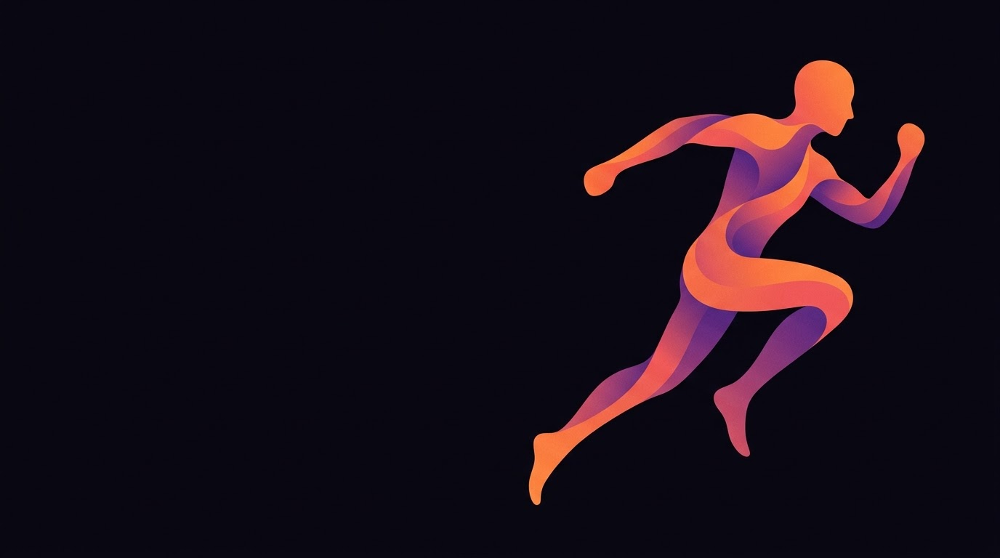
Innovación y Emprendimiento III · INACAP Rancagua
Caso real: Joselyn Toledo, kinesióloga independiente — Centro Médico InMotion
Francisco Ahumada · Claudia Cifuentes · Néstor Rivera · Benjamín Vera Yáñez
Septiembre 2026
01 · El caso
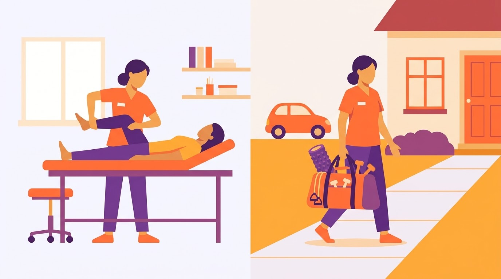
Centro Médico InMotion · ~1 año con empresa propia · 5 especialidades y 2 diplomados
Comisión 70/30 · agenda de secretaria
WhatsApp · auto y materiales propios
02 · Metodología
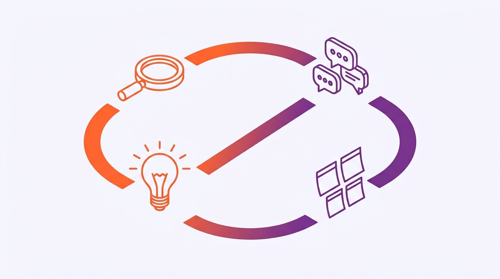
S1
Guion · entrevista · AEIOU
S2
Entrevista experta · PESTAL
S3
Hallazgos · antecedentes
S4
"¿Cómo podríamos…?" · Bitácora
03 · Guion de sondeo y card sorting
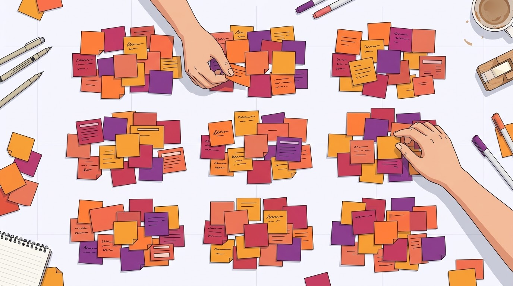
Las categorías no calzan 1:1 con el Business Model Canvas: "Agenda" cruza canales y relación; "Cobro" cruza costos e ingresos.
04 · Entrevista en profundidad
70/30
Comisión en clínica
45–60'
Sesión 1:1, su diferenciador
10–32h
Carga semanal variable
Gestión financiera: ingresos estacionales, control manual en Excel, sin proyección a 6–12 meses.
Kinesiólogos por comisión, grupos de adultos mayores, presoterapia.
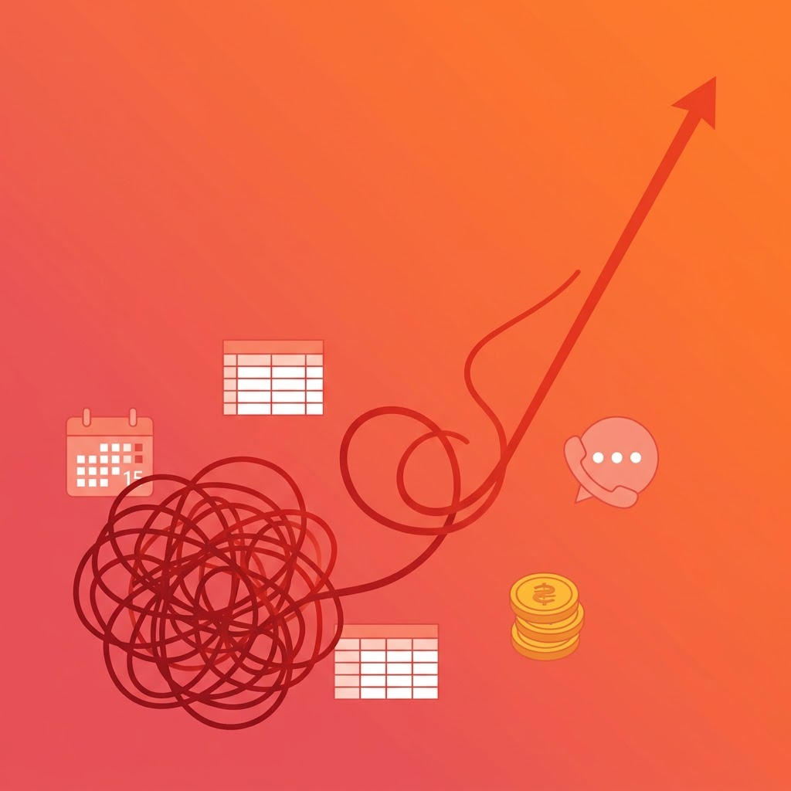
La voz de la usuaria
"Siento que igual tengo como un cierto desorden o falta de educación."
— Joselyn Toledo, sobre su gestión económica
"La carrera de kinesiología es muy inestable, muy inestable."
05 · Observación no participante
| Dimensión | Registro (autorreporte guiado) |
|---|---|
| Actividades | Sesiones 1:1 · coordinación por WhatsApp · traslados · registro en Excel al cierre del día |
| Entornos | Box de InMotion · hogares de pacientes · el auto como "oficina móvil" |
| Interacciones | Pacientes y familiares · secretaria de la clínica · contadora externa |
| Objetos | Celular (WhatsApp + calendario) · planilla Excel · materiales · vehículo · boletas |
| Usuarios | Directa: Joselyn · Indirectos: pacientes, secretaria, contadora, familiares |
Lectura: dos agendas que no se cruzan, y las finanzas se registran después, a mano.
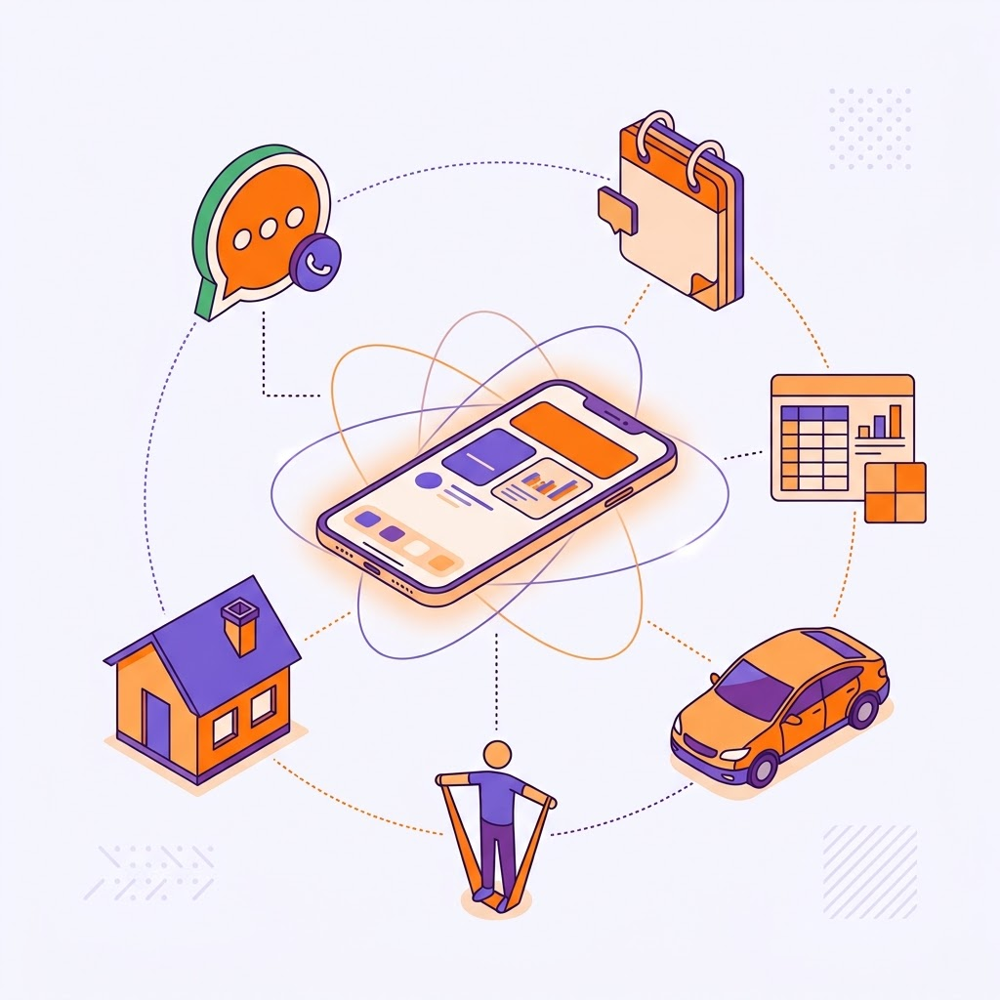
06 · Entrevista a experta
Catalina, kinesióloga y colaboradora previa del equipo (Vital Kine). Guion de 10 preguntas vía chat, construido sobre 5 hipótesis:
| # | Hipótesis | Preguntas |
|---|---|---|
| H1 | La agenda se gestiona con herramientas genéricas o apps que no calzan con el modelo mixto | P02 · P03 |
| H2 | El control financiero es manual y no permite proyectar | P04 · P05 |
| H3 | La demanda es estacional y desestabiliza el ingreso | P06 |
| H4 | La captación depende del boca a boca, sin canal digital propio | P07 · P08 |
| H5 | Hay disposición a pagar por una solución a medida | P09 · P10 |
07 · Análisis del entorno
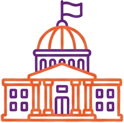
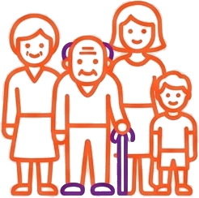
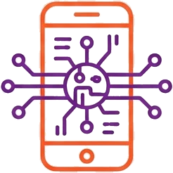
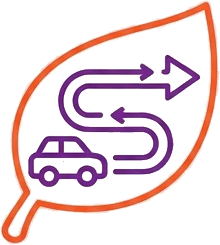
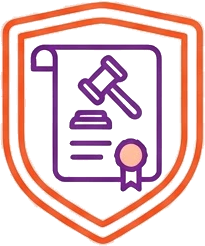
08 · Vaciado y priorización
| Hallazgo | Fuente | Prioridad |
|---|---|---|
| Ingresos variables, sin proyección a 6–12 meses | Entrevista · PESTAL | Alta |
| Control financiero manual en Excel ("desorden") | Entrevista · AEIOU | Alta |
| Dos agendas separadas, sin vista unificada | AEIOU · Mapa de síntesis | Alta |
| Captación solo por WhatsApp, boca a boca y referidos | Entrevista · Card sorting | Alta |
| Diferenciador claro: atención 1:1 y trato cercano | Entrevista · Mapa | Media |
| Visión de crecimiento sin plan formal | Mapa · Entrevista | Media |
Insights
01
El problema no es registrar: es anticipar.
02
La solución debe ser mobile-first y convivir con WhatsApp.
03
El diferenciador no tiene un canal que lo comunique.
09 · Antecedentes nacionales e internacionales
| Solución | Origen | Qué resuelve | Brecha frente al caso |
|---|---|---|---|
| AgendaPro | Chile | Agenda, recordatorios, pagos | Pensada para centros; no integra la comisión con clínica externa |
| Reservo | Chile | Agenda y ficha clínica | Finanzas personales y proyección, secundarias |
| Medilink | Chile | Gestión clínica y caja | Complejo y caro para una independiente |
| Jane App | Canadá | Agenda y cobros para fisioterapia | No adaptado a moneda ni tributación chilena |
| Cliniko | Australia | Práctica de salud aliada | No contempla domicilios ni rutas |
| SimplePractice | EE.UU. | Práctica privada + dashboard | Orientado a seguros de EE.UU. |
10 · Redefinición del desafío
¿Cómo podríamos unificar la agenda y el control financiero de una kinesióloga independiente con modelo mixto, para que conozca su ingreso neto por modalidad y proyecte sus próximos 3 meses, con menos de 10 minutos diarios de registro, durante el 2° semestre de 2026 en Rancagua?
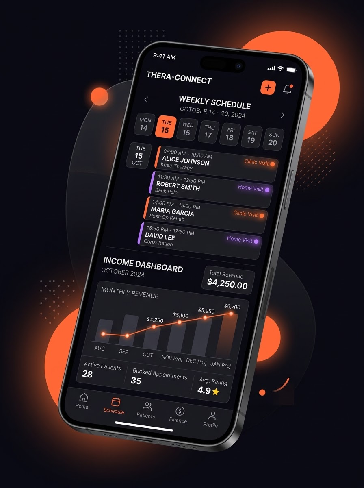
11 · Oportunidades seleccionadas
Clínica y domicilio en una vista, ingreso neto por modalidad y proyección.
Un canal para el diferenciador, conectado a la reserva online.
| Unidad | Trabajo futuro |
|---|---|
| U2 · Ideación | Co-crear requerimientos con Joselyn · propuesta de valor sostenible |
| U3 · Prototipo | Figma mobile-first · 2+ ciclos de testeo |
| U4 · Propuesta | Factibilidad (suscripción) · pitch a Sercotec |
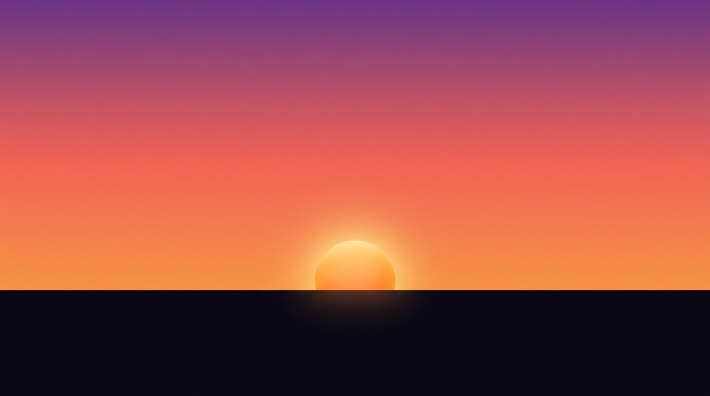
Conclusión
Usuaria, observación, experta, entorno y antecedentes convergen en el mismo dolor: la gestión financiera y de agenda del profesional independiente.
Criterios 1.1.1 – 1.1.6 · Gracias